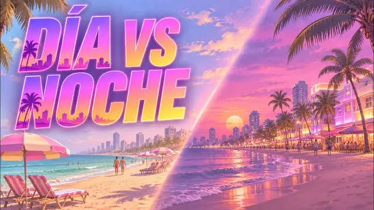

Se abre en YouTubeDe qué trata el vídeo
Vice City, la gran ciudad de Leonida inspirada en Miami, cambia por completo entre el día y la noche.
Comparamos los dos ciclos: el tráfico bajo el sol, la gente en la playa y en las calles, y el contraste cuando cae el atardecer y se encienden los neones.
Puntos clave
- Iluminación y sombras
- Neón y vida nocturna
- Gente en la playa y en las calles
- ¿Qué ciclo es mejor para explorar?
Título en YouTube: «Diferencias entre Vice City Día vs Noche | ¿Cuál es mejor?». Análisis hecho con material oficial de Rockstar Games, sin filtraciones.